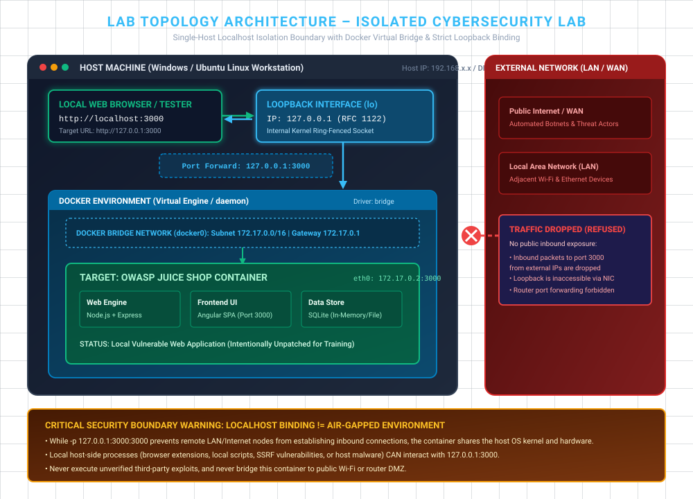
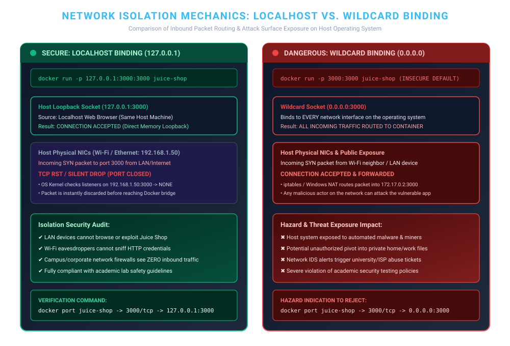

Legal Scope and Isolated Practice Environment
A comprehensive, beginner-friendly cybersecurity laboratory establishing strict legal authorization boundaries, container virtualization isolation, and RFC 1122 loopback socket controls for practicing application vulnerability assessment.
Lab Architecture & Virtualization Boundary
The lab isolates the deliberately vulnerable container inside a virtual network namespace on the host machine. Inbound connections are restricted strictly to the kernel loopback interface.
-p 127.0.0.1:3000:3000) ring-fences the vulnerable service from inbound LAN and WAN packets, but it does not create a physically air-gapped system. The container still shares the host machine's operating system kernel, CPU, physical memory, and outbound routing table. Host-side processes (such as rogue browser extensions, malicious scripts, or local malware) and container Server-Side Request Forgery (SSRF) vectors can communicate across this boundary. Always inspect any exploit scripts prior to execution.


Lab Installation & Configuration Guide
Follow this beginner-friendly procedure to deploy OWASP Juice Shop on your local workstation. Select your operating system below for tailored instructions.
Step 1: Install & Verify Docker Desktop
Download and install Docker Desktop from the official portal with WSL 2 backend enabled. Verify that the Docker CLI communicates with the engine:
docker info
Step 2: Download the Official OWASP Juice Shop Image
Pull the pre-compiled, audited Docker image maintained by the OWASP foundation:
Step 3: Run the Application with Localhost-Only Port Binding
Execute the container in detached mode, attached to the default bridge network, with port 3000 bound exclusively to 127.0.0.1:
Step 4: Open the Application in Your Web Browser
Navigate to the loopback URL. Verify the storefront and challenge board load correctly:
Step 5 & 6: Verify Container Runtime & Socket Port Binding
Audit the Docker daemon state to confirm the container is active and strictly bound to 127.0.0.1:
docker port juice-shop
# Expected Output:
3000/tcp -> 127.0.0.1:3000
Ubuntu Linux (22.04 / 24.04 LTS) Docker Engine Setup
sudo apt update && sudo apt install -y docker.io
sudo systemctl enable --now docker
# 2. Pull official image
docker pull bkimminich/juice-shop
# 3. Run with strict localhost isolation
docker run -d --name juice-shop --network bridge -p 127.0.0.1:3000:3000 bkimminich/juice-shop
# 4. Audit port binding
docker port juice-shop
# 5. Socket check
ss -tulpn | grep 3000
Command Flag Security Anatomy
| Flag / Parameter | Argument | Operational & Security Function |
|---|---|---|
-d |
None | Detached Mode: Executes container in the background, keeping terminal available. |
--name |
juice-shop |
Labels the container for explicit lifecycle commands (stop, rm, logs). |
--network |
bridge |
Attaches container to default isolated bridge subnet (172.17.0.0/16). |
-p |
127.0.0.1:3000:3000 |
PRIMARY SECURITY CONTROL: Restricts host port 3000 socket binding strictly to loopback IP. Rejects any inbound connection from Wi-Fi or local area network. |
| Image | bkimminich/juice-shop |
Downloads official OWASP container containing Node.js, SQLite, and Angular frontend. |
Common Troubleshooting Scenarios
Get-NetTCPConnection -LocalPort 3000 or in Linux with sudo lsof -i :3000. If an old Juice Shop container is already running, remove it with docker rm -f juice-shop.
sudo systemctl start docker.
-p 3000:3000 instead of -p 127.0.0.1:3000:3000. This exposes the vulnerable app to your entire local Wi-Fi network. Immediately run docker rm -f juice-shop and re-launch with the strict 127.0.0.1: prefix.
Network Isolation & Socket Security Architecture
A technical breakdown of RFC 1122 loopback mechanics, Docker bridge address translation, and why external penetration testing is legally and operationally hazardous.
127.0.0.1:3000 across the virtual bridge interface into container IP 172.17.0.2:3000 without exposing the container to external routing.

Rules of Engagement (ROE) Document
The formal agreement governing security assessment activities. All 14 contractual sections are outlined below. A downloadable and printable PDF is provided for academic records.
Document SEC-ROE-LAB-2026-V1 Summary Matrix
2. Target Environment: Localhost Docker container only.
3. Target Application: OWASP Juice Shop v17+.
4. Authorized URL:
http://127.0.0.1:3000.5. Scope: Container challenge scoreboard only.
7. Prohibited Activities: Public IP scanning, DoS, brute-force saturating host, campus network attacks.
8. Network Restrictions: Loopback socket only; no router port forwarding.
9. Data Handling: Synthetic mock data only; sanitize screenshots.
11. Incident Containment:
docker stop juice-shop & disconnect LAN.12. Responsible Disclosure: Defensive documentation only.
13. Declaration: Explicit acknowledgement of criminal liability.
14. Signatures: Practitioner & faculty advisor signature blocks.
Evidence Collection Gallery
To satisfy academic evaluation, the student must capture and deposit genuine terminal screenshots into evidence/. You can preview your local screenshots in the cards below before submitting.
docker --version; docker info in your host terminal. Capture the window displaying your terminal prompt, OS version, and Docker build. Save as evidence/evd-01-docker-install.png.
juice-shop container is healthy, has not exited, and is executing in detached background mode.
docker ps -a --filter name=juice-shop. Capture the table output displaying STATUS: Up and NAMES: juice-shop. Save as evidence/evd-02-docker-ps.png.
http://localhost:3000 in your browser. Capture the full browser window showing the address bar and Juice Shop storefront. Save as evidence/evd-03-juice-shop-web.png.
127.0.0.1:3000 and is NOT exposed to 0.0.0.0 or the LAN.
docker port juice-shop. Capture the terminal displaying 3000/tcp -> 127.0.0.1:3000. Save as evidence/evd-04-port-binding.png.
diagrams/lab-topology.svg in your browser. Verify all nodes and the critical warning banner are clear. Capture and save as evidence/evd-05-lab-topology.png.
reports/Rules_of_Engagement.pdf with your genuine student name and signature. Capture the signed block and save as evidence/evd-06-signed-roe.png.
Final Laboratory Verification Checklist
Manually verify each configuration milestone as you execute the setup on your host machine. Your progress is dynamically calculated and saved locally.
Final Submission & Repository Structure
The project adheres to professional GitHub repository standards suitable for academic evaluation and cybersecurity engineering portfolio review.
Commands to Publish Repository to GitHub
git init
# 2. Stage all documentation, diagrams, evidence, and code
git add .
# 3. Create initial commit
git commit -m "feat: complete legal scope and isolated cybersecurity practice lab"
# 4. Link to your GitHub repository
git remote add origin https://github.com/<your-username>/legal-scope-isolated-security-lab.git
git branch -M main
git push -u origin main